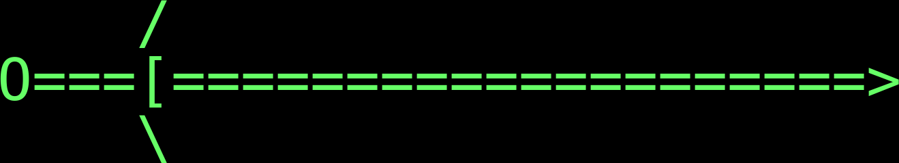

AUTO
polyhedral dice
Show/hide help.
Enter numbers 0-9.
Set auto mode, to roll as soon as a valid dice expression with standard dice is entered. You may have to turn this off to roll some kinds of non-standard dice.
Roll 6 ability scores (4d6, take top 3).
Clear the display.
Roll 1d20.
Roll 1d100 for a result of 1-100.
If a valid dice expression is on the display, roll the dice. You do not need to press this if you are rolling standard dice in auto mode.
Separates the number of dice from the number of sides. For example, enter 2d6 to roll two dice with six sides each.